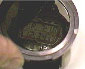
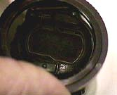

Liquid Crystal Display
Watch liquid crystal display. | 
A polarizer parallel to that of the front layer does not obscure the display. | 
A polarizer crossed with the front layer blocks all light from the display. |
A dichroic polarizer covers the liquid crystal display. The polarized light from the background is transmitted, but the part which makes up the numerals has been rotated 90° and is blocked, forming the dark areas. If a polarizer with axis perpendicular to the surface polarizer is placed over the display as in the top right image, the entire display looks black.
|
Index
Polarization concepts |